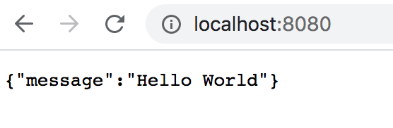

Now we have installed our dependencies and we have load in the express module in our app.js
So now we can create web server using express now app.js file look like
const express = require("express");
// create express app
const app = express();
// define a root/default route
app.get('/', (req, res) => {
res.send({"message": "Hello World});
});
// listen for requests
app.listen(8080)
Now run the server and go to http://localhost:8080 to access the route.
Response will be like as below

let burgers = [
{
id: 1,
name: "Fully loaded",
price: 99
},
{
id: 2,
name: "Pablo",
price: 89
}
];
Then we make a variable so we can make some sort of autoincrement for our object id in the array
// to make some sort of autoincrement starting by 3 because we have 2 objects in the array
let id = burgers.length;
Like our first eksample we make the route for our get request to get all our burger objects in the Database(our in-memory array database
app.get("/burgers", (req, res) => {
res.send({data: burgers})
})
//Here we can make a get request by id in the url, we use the find() method because it returns the value of the first element in the provided array that satisfies the provided id from the url. If no values satisfy the testing function, undefined is returned.
app.get("/burgers/:id", (req, res) => {
const findBurger = burgers.find(burger => burger.id === req.params.id)
res.send({data: findBurger})
})
app.use(express.json());
Here is the explanation that should clear doubts on express.json() and express.urlencoded() and the use of body-parser.
Then we add our post request, so we can add new burgers to the menu. first we get the burger from the request in Postman, will come back to postman later. Then we get our id variable from earlier, and count it up before we save is to the newburger.id then we push the newBurger variable to our array. Last we get a responds with the newburger we created
app.post("/burgers", (req, res) => {
// 1. get burger
const newBurger = req.body;
// 2. add id && we use prefix ++id which will count it 1 up before it saves it
newBurger.id = ++id
// 3. add to array
burgers.push(newBurger)
// 4. send the data back
res.send({data: newBurger})
})
PUT is a method of modifying resource where the client sends data that updates the entire resource. It is used to set an entity’s information completely. PUT is similar to POST in that it can create resources, but it does so when there is a defined URI. PUT overwrites the entire entity if it already exists, and creates a new resource if it doesn’t exist.
For example, when you want to change the first name of a person in a database, you need to send the entire resource when making a PUT request.
Unlike PUT, PATCH applies a partial update to the resource.
This means that you are only required to send the data that you want to update, and it won’t affect or change anything else. So if you want to update the first name on a database, you will only be required to send the first parameter; the first name.
So in this case we use PATCH so we update one parameter if we want that.
First we use the map() method that creats a new array populated with the results of a if statement so if the burger id is the same as the one from the request. We will change that burger with the spread operater. If the burger is not equal to the request the it just gets return to the new array. The spread
app.patch("/burgers/:id", (req, res) => {
burgers = burgers.map(burger => {
if (burger.id === Number(req.params.id)) {
burgerUpdated = true;
//change the burger, we use the spread operater
return {...burger, ...req.body, id: burger.id}
}
return burger;
})
res.send({data: burgerUpdated });
})
Here we have the delete request, which take the id from the url. Then we use the filter method that creates a new array with all elements that pass the test implemented, like here if the burger.id is not equal to the url id it passes the test. And if the id's are equal it filter that object out
app.delete("/burgers/:id", (req, res) => {
const id = req.params.id;
burgers = burgers.filter(burger => burger.id !== id);
res.send({ })
})
See the whole code in one file app.js